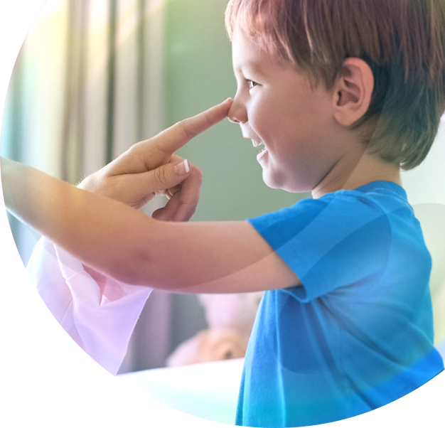
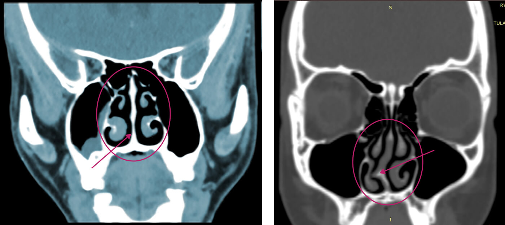
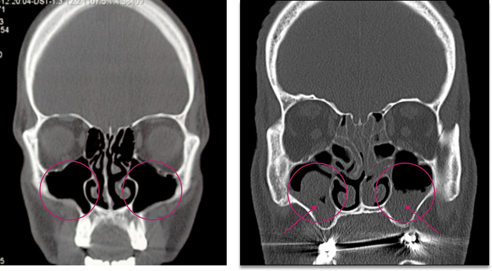
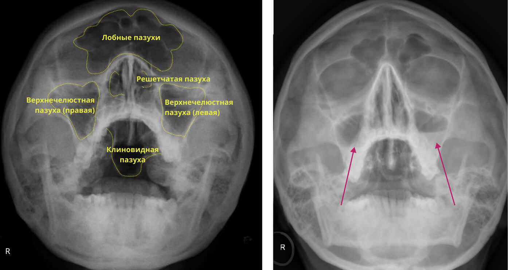
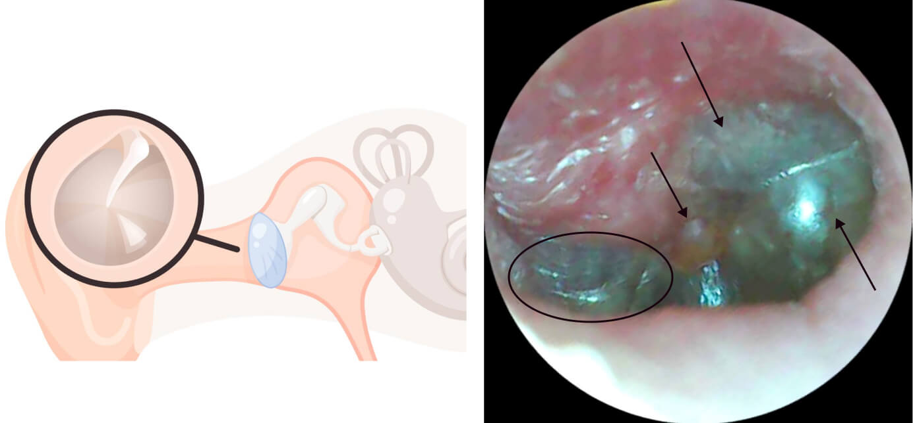

Аллергический ринит
Роль лор-врача в ведении пациентов с аллергическим ринитом
Классификация аллергического ринита1
{kind=link}
| Тип АР | Определение |
|---|---|
| Сезонный аллергический ринит (САР) | Заболевание, вызванное IgE-опосредованной воспалительной реакцией на сезонные аэроаллергены. Продолжительность сезонного воздействия этих аллергенов зависит от географического положения и климатических условий. |
| Круглогодичный аллергический ринит (КАР) | Заболевание, вызванное IgE-опосредованной воспалительной реакцией на круглогодичные аэроаллергены окружающей среды. К ним могут относиться пылевые клещи, плесень, аллергены животных или некоторые профессиональные аллергены. |
| Интермиттирующий АР | Заболевание, вызванное IgE-опосредованной воспалительной реакцией и характеризующееся частотой воздействия или возникновением симптомов (<4 дней в неделю или <4 недель в год). |
| Персистирующий АР | Заболевание, вызванное IgE-опосредованной воспалительной реакцией и характеризующееся постоянными симптомами (>4 дней в неделю и >4 недель в году). |
| Эпизодический АР | Заболевание, вызванное IgE-опосредованной воспалительной реакцией, которая может возникнуть, если человек находится в контакте с объектом, который обычно не является частью окружающей среды (например, кошка в доме друга). |
Аллергический ринит (АР) — заболевание, вызванное IgE-опосредованной воспалительной реакцией слизистой оболочки носа после воздействия вдыхаемых аллергенов.
Ранняя классификация АР с делением только на сезонный и круглогодичный имела некоторые ограничения, поскольку продолжительность сезона цветения аллергенных растений зависит от географического положения и климатических условий. В некоторых зонах пыльцевой сезон может быть круглогодичным.
Симптомы АР: водянистая ринорея, заложенность носа, зуд в носу и чихание.
Зачастую симптомы АР у пациентов с персистирующей формой заболевания усугубляются сезонным воздействием пыльцы, вызывая полисенсибилизацию, поэтому разница в клинических проявлениях сезонного и круглогодичного АР не столь очевидна.
Сопутствующие заболевания и осложнения АР2
| Сопутствующие заболевания и осложнения при АР | Встречаемость | |
|---|---|---|
| У взрослых | У детей | |
| Прогрессирование АР с развитием БА | ||
| Обострения БА | ||
| Отклонения в формировании лицевого черепа |
|
|
| Гипосмия (нарушение обоняния) | ||
| Протрузия (выступание вперед) резцов |
|
|
| Аномалия прикуса (перекрестная окклюзия, высокий свод неба) |
|
|
| Полипы в носу | ||
| Экссудативный отит | ||
| Синусит | ||
Обозначения:
— возможно;
— не встречается;
— неясно.
Аллергический ринит, оставленный без должного контроля симптомов, может спровоцировать развитие сопутствующих патологий, причем, как у взрослых, так и у детей.
Среди осложнений АР чаще всего встречаются: бронхиальная астма, назальные полипы, как правило, двусторонние, отиты и дисфункция евстахиевой трубы, гипосмия и пр.
Сопутствующие заболевания, в свою очередь, также могут усложнить течение АР и снижать эффективность проводимой терапии.
Таким образом, АР не только ухудшает качество жизни больных, но и является предрасполагающим фактором риска развития более тяжелых, иногда приводящих к инвалидизации состояний.
Роль лор-врача
Визуальная оценка
полости носа
Передняя риноскопия
Эндоскопическое исследование полости
носа и носоглотки
Порой возникают ситуации, когда трудно добиться контроля над симптомами. В этом случае для коррекции терапии необходимо проводить расширенную диагностику, которую сможет провести только лор-врач.
В качестве методов исследования лор-врачи могут использовать не только методы физикального осмотра, но и инструментальной диагностики. Для оценки состояния околоносовых пазух и возможных осложнений, таких как синусит, может дополнительно проводиться компьютерная томография (КТ).
Если же пациент обращается к лор-врачу напрямую, то он осуществляет детальный сбор анамнеза, который включает изучение симптомов, условий жизни и работы пациента, а также возможных триггеров развития аллергических реакций. Это позволяет не только установить верный диагноз, но и в случае АР определить, какие именно аллергены могут вызывать воспаление. Далее врач также проводит визуальную оценку состояния носа, носоглотки и, в случае необходимости, слуховых проходов.
Хотя, безусловно, оптимальным является мультидисциплинарный подход и именно совместная работа аллерголога и лор-врача позволяет пациенту достичь устойчивого контроля над симптомами. Эффективное управление АР включает не только устранение симптомов, но и постоянное наблюдение за состоянием пациента, что позволяет своевременно выявлять и устранять возникающие патологические состояния.
Примеры структурных нарушений:
искривление носовой перегородки

Искривление носовой перегородки у пациентов с АР может пагубно влиять на течение данного заболевания3.
Небольшое искривление носовой перегородки встречается у большей части населения, поэтому считается нормой, но только в том случае, когда оно не вызывает явного беспокойства у пациента. Однако сильное искривление носовой перегородки, являющееся следствием травмы либо аномалий развития, может привести к серьезным последствиям4.
Искривленная носовая перегородка, пожалуй, одна из наиболее распространенных причин перехода острой формы ринита в хроническую. Кроме того, подобная деформация может привести к образованию полипов и кист, а также к нарушению дыхания, храпу, апноэ5.
Примеры осложнений АР:
риносинусит

В последние годы специалисты все чаще обсуждают взаимосвязь между аллергическим ринитом и разными подтипами риносинусита. И хотя механизмы этой связи до сих пор недостаточно изучены, предполагается, что пациенты с АР более склонны к развитию хронического риносинусита6.
На представленных изображениях вы видите КТ пазух носа (фронтальный срез). У здорового человека (слева) верхнечелюстные пазухи чистые, не расширены, слизистая не утолщена, затемнение в проекции пазух отсутствует.
При риносинусите (изображение справа) на КТ определяется плотная тень с неровными контурами преимущественно в нижних отделах пазух. Слизистая носовых ходов отечная.
Примеры осложнений АР: синусит
Острый синусит — частный случай риносинусита, при котором воспаление затрагивает слизистую оболочку околоносовых пазух. Острый риносинусит обычно хорошо диагностируется на основании анамнеза и физикального осмотра. Диагностика путем проведения рентгеноскопии проводится, как правило, в случаях подозрений на осложнения или бактериальную инфекцию7.
На рентгеновском снимке справа представлена картина острого двустороннего гнойного верхнечелюстного синусита, что подтверждает наличие горизонтального уровня жидкости в пазухах. Левая пазуха заполнена больше — примерно на 1/3, правая пазуха заполнена наполовину.
Примеры осложнений АР: гнойный отит
Воспалительный процесс, протекающий при риносинуситах (в том числе аллергических), при отсутствии своевременного лечения может также затрагивать среднее, наружное или внутренне ухо, провоцируя развитие отита. При таком поражении пациент может жаловаться на неприятные болевые ощущения. Согласно последним данным, аллергический ринит может быть предрасполагающим фактором к развитию среднего отита у детей8.
Перед вами клиническая картина острого правостороннего гнойного среднего отита, доперфоративная стадия. При проведении отоскопии видно, что перепонка отечная, гиперемирована в верхних отделах, выбухание преимущественно задне-нижнего квадранта, за перепонкой визуализируется гнойное содержимое.
Представления о терапии АР
Информирование пациентов о заболевании и важности приверженности лечению
Избегание аллергенов и промывание носа целесообразно в течение всего времени
(*) Вспомогательная терапия.
Ринорея: Ипратропия бромид; Ринорея приБА: АЛТР; Зуд в области глаз/ кожная сыпь: п/о не седативные АГП; Офтальмологические проявления: глазные АГП или кромоны; Внезапная заложенность носа: деконгестанты (интерназальные или п/о, краткосрочно — до 7 дней).
АР — аллергический ринит; БА — бронхиальная астма; ВАШ — визуальная аналоговая шкала; ГКС — глюкокортикостероиды; инГКС — интраназальные глюкокортикостероиды; АГП (Н1) — антигистаминные препараты (Н1-гистаминовых рецепторов блокаторы); п/о — пероральный; инАГП — интраназальные антигистаминные препараты; АСИТ — аллерген-специфическая иммунотерапия.
- Таблица адаптирована из EUFOREA Allergic Rhinitis Pocket Guide и Next-generation ARIA (2019).
Современные европейские клинические рекомендации вводят понятие «ступенчатой терапии» аллергического ринита (step up/ step down).
На первой ступени применяются пероральные неседативные антигистаминные препараты. Также возможно применение интраназальных АГП или интраназальных ГКС.
В случае недостаточного ответа на данную терапию или при ухудшении симптомов требуется уточнить диагноз и проверить приверженность пациента лечению, а также провести поиск сопутствующих заболеваний, после чего перейти на следующую ступень (step up), где вместо монотерапии применяются комбинации ГКС и АГП в различных лекарственных формах.
Если терапия по-прежнему неэффективна и состояние пациента ухудшается, стоит верифицировать поставленный ранее диагноз и провести расширенный поиск сопутствующих заболеваний, отягощающих течение АР. Возможно, на этом этапе пациенту понадобится оперативное вмешательство (например, в случаях тяжелого полипоза).
Когда состояние пациента улучшается, стоит снизить медикаментозную нагрузку (сделать «шаг вниз» — step down) с периодической оценкой состояния пациента.
Кроме основной терапии также рекомендуется промывание носа солевыми растворами или применение аллерген-специфической иммунотерапии (АСИТ). Иные методы лечения должны быть подобраны с учетом индивидуальных особенностей пациента и наличия коморбидных заболеваний, например конъюнктивита, бронхиальной астмы и пр.
Фенкарол® — быстрое решение
против симптомов аллергии8

Двойное действие

Активация диаминоксидазы (фермента,инактивирующего гистамин) и уменьшение содержания медиатора в тканях

Блокировка гистаминовых H1-рецепторов
*Максимальная концентрация активного вещества в плазме крови
Умеренное
антисеротониновое
действие
Антигистаминный препарат II поколения Фенкарол® показан при
различной аллергической патологии.
Фенкарол® быстро и эффективно устраняет симптомы, не влияя на концентрацию
внимания9.
Разрешен взрослым и детям с 3 лет9.
Оглавление:
Список ссылок и сокращений:
АР — аллергический ринит;
КТ — компьютерная томография;
ГКС — глюкокортикостероиды;
АГП — антигистаминные препараты;
АСИТ — аллерген-специфическая иммунотерапия.
- Seidman M. D., Gurgel R. K., Lin S. Y. et al. Clinical practice guideline: Allergic rhinitis. Otolaryngol Head Neck Surg. 2015;152 (1 Suppl): S1-S43. doi:10.1177/0194599814561600
- Бодня О. С., Ненашева Н. М. В помощь практикующему врачу: ведение пациентов с аллергическим ринитом на амбулаторном этапе. Астма и аллергия. 2015; (4): 34–40.
- Feroz S., Dawood M. H., Sohail S. et al. A longitudinal prospective study of septoplasty impact on headache and allergic rhinitis in patients with septal deviation. J Int Med Res. 2023; 51(11): 3000605231215168. doi:10.1177/03000605231215168
- Alghamdi F. S., Albogami D., Alsurayhi A. S. et al. Nasal Septal Deviation: A Comprehensive Narrative Review. Cureus. 2022;14(11): e31317. Published 2022 Nov 10. doi:10.7759/cureus.31317
- Malpani S. N., Deshmukh P. Deviated Nasal Septum a Risk Factor for the Occurrence of Chronic Rhinosinusitis. Cureus. 2022;14(10): e30261. Published 2022 Oct 13. doi:10.7759/cureus.30261
- Fokkens W. J., Lund V. J., Hopkins C. et al. European Position Paper on Rhinosinusitis and Nasal Polyps 2020. Rhinology. 2020; 58(Suppl S29): 1-464. Published 2020 Feb 20. doi:10.4193/Rhin20.600
- Rosenfeld R. M., Piccirillo J. F., Chandrasekhar S. S. et al. Clinical practice guideline (update): adult sinusitis. Otolaryngol Head Neck Surg. 2015; 152(2 Suppl): S1-S39. doi:10.1177/0194599815572097
- Byeon H. The association between allergic rhinitis and otitis media: A national representative sample of in South Korean children. Sci Rep. 2019; 9(1): 1610. Published 2019 Feb 7. doi:10.1038/s41598-018-38369-7
- Электронный ресурс: https://dati.zva.gov.lv/ Fenkarol® zāļu apraksts. Teksta pārskatīšanas datums 24.10.2024.